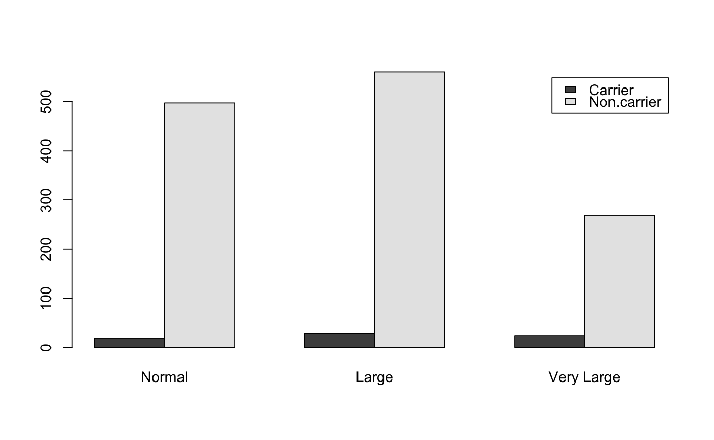

Data for Exercise 2.78
Tonsils
A data frame/tibble with 1,398 observations on two variables
a factor with levels Normal, Large, and Very Large
a factor with levels Carrier and Non-carrier
Kitchens, L. J. (2003) Basic Statistics and Data Analysis. Duxbury
T1 <- xtabs(~size + status, data = Tonsils) T1#> status #> size Carrier Non-carrier #> Normal 19 497 #> Large 29 560 #> Very Large 24 269prop.table(T1, 1)#> status #> size Carrier Non-carrier #> Normal 0.03682171 0.96317829 #> Large 0.04923599 0.95076401 #> Very Large 0.08191126 0.91808874prop.table(T1, 1)[2, 1]#> [1] 0.04923599barplot(t(T1), legend = TRUE, beside = TRUE, col = c("red", "green"))# NOT RUN { NDF <- dplyr::count(Tonsils, size, status) ggplot2::ggplot(data = NDF, aes(x = size, y = n, fill = status)) + geom_bar(stat = "identity", position = "dodge") + scale_fill_manual(values = c("red", "green")) + theme_bw() # }